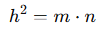

Euclides

(330 a.C. - 275 a.C.) Matemático griego. Junto con Arquímedes y Apolonio de Perga, posteriores a él, Euclides fue pronto incluido en la tríada de los grandes matemáticos de la Antigüedad. Sin embargo, a la luz de la inmensa influencia que su obra ejercería a lo largo de la historia, hay que considerarlo también como uno de los más ilustres de todos los tiempos.
Pese a que realizó aportaciones y correcciones de relieve, Euclides ha sido visto a veces como un mero compilador del saber matemático griego. En realidad, el gran mérito de Euclides reside en su labor de sistematización: partiendo de una serie de definiciones, postulados y axiomas, estableció por rigurosa deducción lógica todo el armonioso edificio de la geometría griega. Juzgada no sin motivo como uno de los más altos productos de la razón humana y admirada como un sistema acabado y perfecto, la geometría euclidiana mantendría su vigencia durante más de veinte siglos, hasta la aparición, ya en el siglo XIX, de las llamadas geometrías no euclidianas.
TEOREMA DE EUCLIDES
El Teorema de Euclides se refiere a dos relaciones métricas importantes en los triángulos rectángulos que conectan las alturas, proyecciones y la hipotenusa. Estos teoremas son fundamentales para resolver problemas geométricos en triángulos rectángulos.
Teorema de la altura
En un triángulo rectángulo, la altura h trazada desde el vértice del ángulo recto hasta la hipotenusa divide a la hipotenusa en dos segmentos, m y n. El teorema establece que:

Donde:
h: Altura relativa a la hipotenusa.
m y n: Segmentos en los que la altura divide a la hipotenusa.
Teorema del cateto
En un triángulo rectángulo, cada cateto está relacionado con la hipotenusa y la proyección del cateto sobre la hipotenusa. El teorema establece que:

Donde:
a: Longitud de un cateto.
b: Longitud del otro cateto.
c: Longitud de la hipotenusa.
m: Proyección del cateto aaa sobre la hipotenusa.
n: Proyección del cateto b sobre la hipotenusa.
Relaciones combinadas
Si combinamos los dos teoremas, obtenemos una fórmula completa para un triángulo rectángulo:
Relación de la altura:

Relación de los catetos:

Aplicaciones del Teorema de Euclides
Cálculo de segmentos de la hipotenusa: Si conocemos la altura y la hipotenusa, podemos calcular m y n.
Resolución de problemas de geometría: Es útil para resolver problemas donde intervienen alturas o proyecciones en triángulos rectángulos.
Trigonometría y geometría analítica: Sirve como base para deducir fórmulas y resolver problemas relacionados con triángulos y proyecciones.
Ejemplo práctico
En un triángulo rectángulo:
La hipotenusa mide c=10 cm
La altura relativa a la hipotenusa es h=6 cm.
Calcula los segmentos mmm y nnn de la hipotenusa.
Solución: Usamos el Teorema de la altura:

Sabemos que:

Resolviendo el sistema:

Usamos la fórmula cuadrática:

Factorizamos:

Por lo tanto: